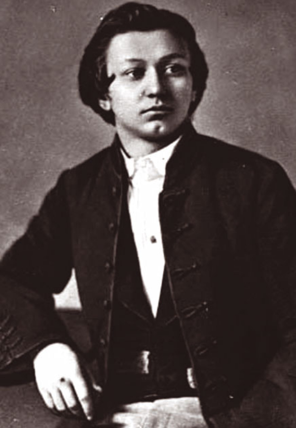

Laza Kostić
(Kovilj, 31. januar / 12. februar 1841. – Beč, 26. novembar 1910.)

Bio je srpski književnik, pesnik, doktor pravnih nauka, advokat, novinar, dramski pisac i estetičar.
Rođen je 1841. godine u Kovilju, u Bačkoj, u vojničkoj porodici. Otac mu se zvao Petar Kostić a majka Hristina Jovanović. Imao je i starijeg brata Andriju, ali njega i svoju majku nije upamtio jer su oni preminuli dok je Laza još bio beba. Petar Kostić, Lazin otac, preminuo je 1877. godine.Osnovnu školu je učio u mestu rođenja. Gimnaziju je završio u Novom Sadu, Pančevu i Budimu, a prava i doktorat prava 1866. na Peštanskom univerzitetu. Službovanje je počeo kao gimnazijski nastavnik u Novom Sadu; zatim postaje advokat, veliki beležnik i predsednik suda. Sve je to trajalo oko osam godina, a potom se, sve do smrti, isključivo bavi književnošću, novinarstvom, politikom i javnim nacionalnim poslovima.
Njegova najpoznatija dela su:
- Maksim Crnojević,
- Pera Segedinac,
- Uskokova ljuba ili Gordana.